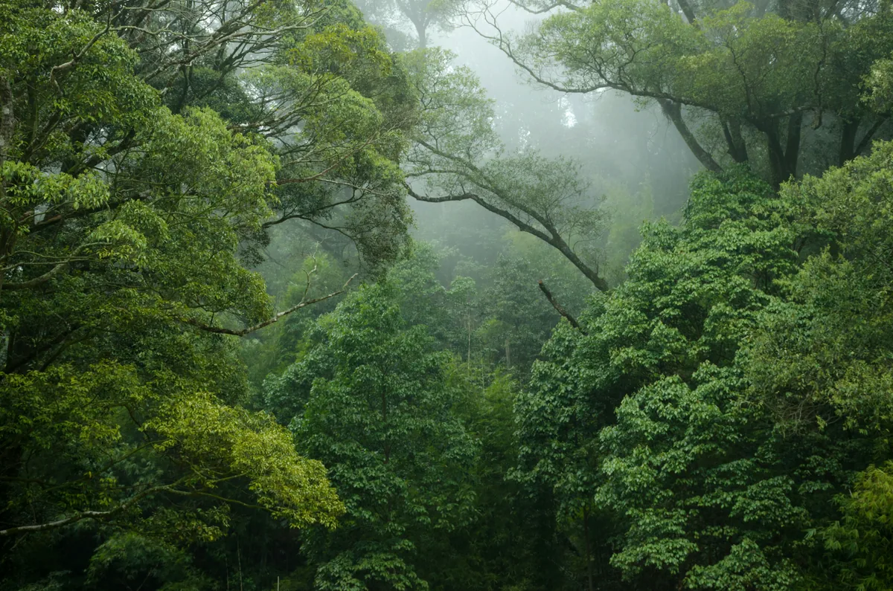

Types of Forests & Forest Resources
Learning Objectives
- Identify the different types of forests found in Papua New Guinea
- Describe the resources and products provided by forests
- Explain the importance of forests to people and the environment
Types of Forests
Papua New Guinea has some of the world's most biodiverse tropical forests — covering approximately 70% of the country's land area. Different forest types exist based on altitude, rainfall, and soil conditions.

Lowland Tropical Rainforest
Found below 1,000 metres altitude. Characterised by tall trees (up to 50m), very high rainfall, high biodiversity, and dense canopy. Home to many commercially valuable timber species.
Montane (Highland) Forest
Found above 1,000 metres. Trees are shorter and often covered in mosses and epiphytes. Higher rainfall and cooler temperatures. Important for water catchment and biodiversity.
Mangrove Forest
Found in coastal areas where land and sea meet — along river mouths, estuaries, and sheltered coastlines. Mangroves have specialised roots that can grow in saltwater. They are extremely important for coastal protection, fish nurseries, and carbon storage.
Swamp Forest
Found in low-lying areas with waterlogged soils. Includes sago palm forests, which are a critical food source for many communities in the Sepik and other lowland regions.
Grassland / Savannah
Open vegetation with grasses and scattered trees, found in drier areas of southern PNG. Home to grazing animals and used for pastoral farming.
Forest Resources and Products
Forests provide a wide range of resources:
- Timber — logs and sawn timber are among PNG's most important exports. Key species include kwila (merbau), rosewood, and PNG teak
- Food — forests provide fruit, nuts, sago, bush meat, insects, and mushrooms for local communities
- Medicine — traditional medicine uses many forest plants; modern pharmaceutical research also draws on forest biodiversity
- Water — forests protect watersheds, regulate water flow, and maintain clean water for rivers
- Carbon storage — forests store enormous amounts of carbon, helping regulate the global climate
- Building materials — timber, bamboo, and palm are used for housing and tools
- Non-Timber Forest Products (NTFPs) — rattan, resin, honey, and many other products harvested without cutting trees
Importance of Forests
- Biodiversity — PNG's forests contain around 5–7% of the world's species, including unique birds, reptiles, and plants found nowhere else on Earth
- Climate regulation — forests absorb CO₂ and produce oxygen. Deforestation accelerates climate change
- Soil protection — forest roots prevent soil erosion and landslides
- Water regulation — forests act as natural sponges, absorbing rain and slowly releasing it into rivers
- Cultural importance — forests have deep spiritual and cultural significance for many communities in Papua New Guinea
- Economic value — logging, ecotourism, and non-timber products all contribute to national and local economies
Key Terms
📝 Summary — What You Should Know
- Papua New Guinea has several forest types: lowland rainforest, montane forest, mangrove, swamp forest, and grassland
- Forests provide timber, food, medicine, water, carbon storage, and building materials
- PNG's forests contain 5–7% of the world's species — extraordinary biodiversity
- Forests protect soil, regulate water, and play a vital role in regulating the global climate
- Deforestation from logging and land clearing threatens PNG's forests — sustainable management is essential
Check Your Understanding
Answer all questions then submit to see how you did.
1. What percentage of Papua New Guinea's land area is covered by forest?
2. What type of forest grows in coastal areas where saltwater and land meet?
3. Which of the following is a Non-Timber Forest Product (NTFP)?
4. What is the main threat to Papua New Guinea's forests?
5. Why are forests important for water?